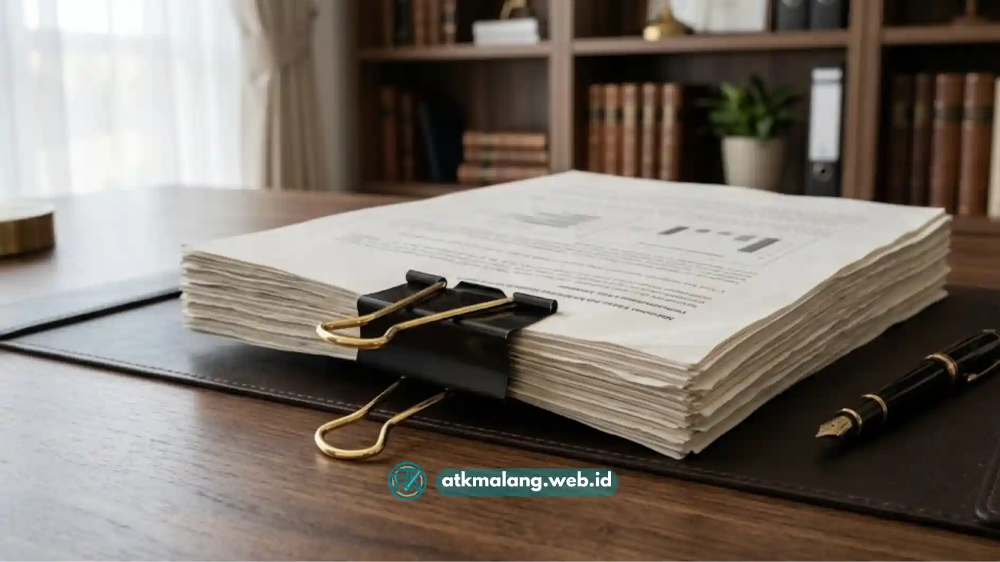

Bagi tim purchasing dan bagian umum perusahaan, binder clip mungkin terlihat seperti barang remeh dalam daftar belanja Alat Tulis Kantor.
Namun kenyataannya, benda kecil ini digunakan hampir setiap hari untuk menjepit laporan keuangan, kontrak kerja sama, hingga bundel dokumen tender yang tebalnya bisa mencapai ratusan lembar.
Ketika penjepit kertas biasa patah saat menjepit berkas tebal, atau materialnya berkarat hingga menodai kertas dokumen penting, kerugiannya bukan hanya soal biaya penggantian.
Tetapi juga risiko terhadap dokumen yang bernilai tinggi. Belum lagi soal harga. Membeli binder clip secara eceran di toko retail memang praktis untuk kebutuhan mendesak.
Namun untuk operasional tahunan perusahaan dengan volume pemakaian tinggi, harga eceran jelas jauh lebih boros dibanding membeli dalam skema binder clip grosir malang.
Daftar Isi
Solusi Penghematan Anggaran Perusahaan dengan Grosir Binder Clip
Sebelum masuk ke pembahasan teknis, mari pahami dulu parameter dasar yang membedakan binder clip berkualitas dari yang cepat rusak di pasaran.
Membeli binder clip grosir malang berkualitas mengharuskan Anda memprioritaskan ketebalan baja pegas anti-karat, jangkauan ukuran dari kecil (tipe No. 105) hingga raksasa (tipe No. 260).
Selain itu perhatikan juga kekuatan cengkeram tuas lipat, serta harga karton grosir dari agen pengadaan kontrak supply yang terpercaya.
Empat parameter di atas adalah dasar yang selalu kami tekankan kepada klien korporat sebelum mereka memutuskan volume dan tipe binder clip yang akan dipesan.
Baja Pegas Anti-Karat, Faktor Penentu Daya Tahan
Binder clip berkualitas rendah biasanya menggunakan lapisan pelindung karat yang tipis, sehingga setelah beberapa bulan terpapar udara lembap, muncul bercak karat.
Bercak karat pada permukaan logam inilah yang kemudian menempel dan menodai kertas dokumen penting, terutama pada berkas yang disimpan dalam jangka waktu lama.
Baja pegas berkualitas tinggi mempertahankan daya lentur cengkeramannya tanpa melemah meski digunakan berulang-ulang, sehingga tuas tidak menjadi longgar.
Menentukan Ukuran yang Tepat Sesuai Ketebalan Dokumen
Kesalahan umum yang sering terjadi adalah menyamaratakan satu ukuran binder clip untuk semua jenis dokumen, yang dapat berakibat fatal pada Alat Tulis Kantor Anda.
Dokumen tipis yang dijepit dengan clip raksasa justru terlihat kurang rapi dan menyisakan bekas lipatan berlebih pada kertas.
Sementara dokumen tebal yang dipaksakan memakai clip kecil berisiko membuat tuas menjadi bengkok, susah dibuka, bahkan patah saat digunakan.
Standarisasi dan Kontrol Kualitas ala Tim Logistik ATK Malang
Dari sudut pandang profesional logistik dan pergudangan kantor, standarisasi ukuran menjadi kunci utama efisiensi pengadaan perlengkapan.
Tim kami menerapkan proses kontrol kualitas sebelum binder clip didistribusikan dalam jumlah besar ke klien korporat, meliputi:
- Verifikasi lebar standar logam: Mulai dari 15mm hingga 51mm, untuk memastikan setiap kode ukuran benar-benar sesuai dengan spesifikasi yang tertera.
- Uji daya lentur baja pegas: Memastikan pegas tidak mudah melemah meski digunakan berulang kali untuk menjepit tumpukan dokumen tebal.
- Kontrol kualitas tumpukan dokumen: Menguji langsung kemampuan cengkeram binder clip pada bundel kertas dengan ketebalan bervariasi sebelum barang siap kirim.
Standar semacam ini penting agar setiap karton binder clip yang kami distribusikan benar-benar konsisten kualitasnya, baik untuk kantor kecil maupun instansi besar.
Kode Ukuran Standar Binder Clip untuk Kebutuhan B2B
Berikut rincian kode ukuran binder clip standar yang paling umum digunakan di lingkungan perkantoran, lengkap dengan kapasitas jepit dan penggunaannya.
| Kode Ukuran | Lebar Clip | Ketebalan Dokumen Maksimum | Isi per Kotak Kecil | Rekomendasi Penggunaan |
|---|---|---|---|---|
| No. 105 | 15 mm | ± 10–15 lembar | 12 pcs | Nota, kwitansi, dokumen tipis harian |
| No. 107 | 19 mm | ± 20–30 lembar | 12 pcs | Surat menyurat, memo internal |
| No. 111 | 25 mm | ± 40–60 lembar | 12 pcs | Laporan bulanan, proposal ringkas |
| No. 155 | 32 mm | ± 70–100 lembar | 12 pcs | Kontrak kerja sama, laporan keuangan |
| No. 200 | 41 mm | ± 120–180 lembar | 12 pcs | Dokumen tender, bundel laporan tahunan |
| No. 260 | 51 mm | ± 200 lembar ke atas | 12 pcs | Arsip tebal, bundel dokumen legal skala besar |
Dengan mengombinasikan beberapa ukuran dalam satu paket pengadaan Alat Tulis Kantor, tim admin dapat menyesuaikan kebutuhan penjepitan untuk berbagai jenis dokumen.
Hal ini meminimalisir kemungkinan harus memesan ulang secara mendadak ketika stok satu ukuran tertentu habis lebih dulu dibanding ukuran lainnya.
Menghitung Efisiensi Anggaran Melalui Pembelian Grosir
Secara umum, semakin besar volume karton yang dipesan, semakin rendah harga per unit binder clip yang didapat.
Penghematan ini sangat terasa untuk pemakaian rutin bulanan di divisi keuangan, HRD, dan legal yang frekuensi penggunaan clipnya sangat tinggi.
Beberapa pertimbangan yang kami sarankan saat menyusun anggaran pengadaan binder clip grosir:
- Hitung rata-rata konsumsi binder clip per bulan berdasarkan volume dokumen yang diproses tiap divisi.
- Kombinasikan ukuran kecil hingga besar dalam satu paket pemesanan agar tidak ada divisi yang kehabisan stok.
- Pertimbangkan pemesanan berkala (misalnya triwulanan) agar anggaran ATK dapat direncanakan lebih akurat tanpa penumpukan berlebih.
- Bandingkan harga per box antara skema eceran dan grosir untuk melihat langsung selisih penghematan tahunan.

Pembelian grosir menghemat anggaran pengadaan alat tulis kantor.Layanan Pengadaan B2B untuk Kebutuhan Stationery Kantor Malang
Sebagai supplier stationery kantor malang yang berpengalaman melayani kebutuhan korporat, kami memahami bahwa pengadaan Alat Tulis Kantor bukan sekadar transaksi satu kali.
Melainkan kebutuhan berkelanjutan yang harus terjamin ketersediaannya sepanjang tahun untuk mendukung produktivitas. Karena itu, kami menawarkan solusi terbaik.
ATK Malang juga menyediakan skema paket atk bulanan malang bagi perusahaan yang ingin menyederhanakan proses pengadaan rutin tanpa harus repot.
Binder clip mungkin tergolong barang kecil, namun perannya dalam menjaga kerapian dan keamanan dokumen perusahaan tidak bisa dianggap remeh.
Dengan memilih binder clip berbahan baja pegas anti-karat dan menyesuaikan ukurannya, perusahaan Anda dapat menghindari kerugian sekaligus menghemat anggaran operasional.